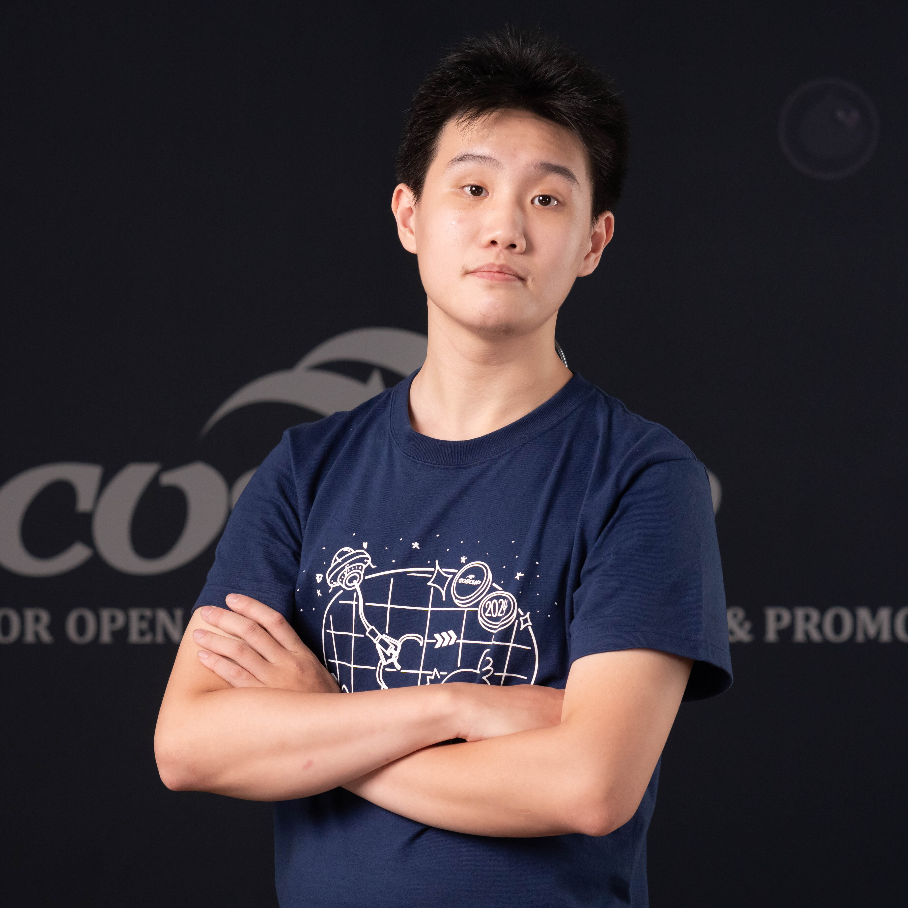

About Me

基本資料
姓名：詹博翔（Po-Hsiang Chan, Brian Jhan）
出生日期：2003年01月02日
聯絡電話：+886-972-067-697
電子郵件：mail@brian.taipei
通訊地址：104 臺北市中山區德惠街3巷3號7樓712室
戶籍地：251 新北 淡水
興趣：排球(背號13)、攝影、騎車
學歷
| 級別 |
學校名稱 |
科系 |
起訖日期 |
| 學士 |
私立大同大學 |
資訊經營學系 (資管) |
110/9 ~ 至今 |
| 高中 |
新北市私立及人高級中等學校 (現新北市私立中信高級中等學校) |
普通科 |
107/9 ~ 110/6 |
工作經歷
-
Sky Digital 天空數位 (2025.07 ~ 2025.11)
- 林口台亞&內湖是方宏鼎&內湖是方麗園 機房查修、客戶託管設備安裝調試
- 日常海纜線路壅塞調整
-
TWNOG 6 (2025) AS18248 新竹國網中心
- eduroam東華介接
- grafana監控
- FOX & TWAREN 20G上游
- 台智光10G專線-新竹國網串台大醫院國際會議廳(洽談&會勘)
-
Team T5 杜甫數位安全 (2025.01 ~ 2025.07)
- 遠傳內湖安康機房 機櫃擴櫃搬遷
- ISMS ISO-27001 文件處理、內部稽核
- 8F PM新辦公室網路架構規劃、設備調度
- Grafana+Zabbix 機房監控
-
私立大同大學 圖書資訊處系統網路組 宿舍網管 (2022.02 ~ 至今)
- 期間學習校園網路架構及管理方法，並間接了解機房管理之基礎。
- 協助宿舍類比監視器監控網路整合及建構CMS集中管理系統(進行中)
- 協助宿舍進行門禁系統架設及管理系統改善(進行中)
-
私立大同大學 資訊經營學系 系計算機中心 (系機房)（2022.06 ~ 至今）
- 改善三間電腦教室及系上其他網路架構，鋪設光纖及重新設計系骨幹架構，劃設隔離vlan及切分資安敏感設施(如門禁機、印表機...等)，協助重整所有電腦之系統。
社群經歷
SITCON 2019,2020,2021 Attendee
COSCUP 2019,2020 Attendee
COSCUP 2021 場務組物流股組員
SITCON 2022 製播組組員（R1副導播）
COSCUP 2022 製播組組員
COSCUP 2022 場務組物流股組員
COSCUP 2023 製播組實習組長
SITCON 2024 製播組組員（R1導播）
COSCUP 2024 製播組組員
MOPCON 2024 Attendee
SITCON 2025 製播組副組長
TWNOG 6 (2025) Infrastructure & Image Team
COSCUP 2025 製播組組員
MOPCON 2025 攝影紀錄組組員
SITCON 2026 製播組組長
COSCUP 2026 製播組組員
TWNOG 7 (2026) Infrastructure & Image Team
社團經歷
111 學年度
- 大同大學科學開源服務社 教學長
- 大同大學宿舍自治會 總務及器材長
112 學年度 ~ 115 學年度
教學助理
| 課程名稱 |
開課系所（班級） |
授課教師 |
開課學年（學期） |
職務 |
| 基本計算機實驗 |
資訊經營學系(資經二～四) |
張廷棟 |
111(一) |
教學助理 |
| 基本計算機實驗 |
資訊經營學系(資經二～四) |
張廷棟 |
111(二) |
教學助理 |
| 基本計算機實驗 |
資訊經營學系(資經二～四) |
張廷棟 |
112(一) |
教學助理 |
| 基本計算機實驗 |
資訊經營學系(資經二～四) |
張廷棟 |
112(二) |
教學助理 |
| 基本計算機實驗 |
資訊經營學系(資經二～四) |
張廷棟 |
113(一) |
教學助理 |
大學專題
陳音璇, 張瀞儀, 詹博翔, "Elderly Guardian 銀髮守護者", Dec 2024 王永心
競賽
AIoT InnoWorks 物聯網專題競賽 2023 特優
陳音璇, 畢婉兒, 譚婕翎, 詹博翔, "智慧舒適綠環境平台建構-以圖書館空間用戶之視覺與溫熱舒適感控為例" Dec 2023 胡志堅
證照
專業技能
- 網路管理
- Cisco Routing & Switching
- Juniper Routing & Switching
- SNMP
- Synology DSM 7.x
- 機房管理
- 作業系統
- Windows Server 2003, 2008 R2, 2012, 2016, 2019, 2022
- Debian/GNU Linux (Debian, Ubuntu, Kali Linux, Raspberry Pi OS)
- VMware ESXi 6.5 6.7 (2017~2021)
- Proxmox VE 6.3~8.4
- 程式語言
- C/C++ (Arduino, barely learned)
- Java
- HTML5
- JavaScript
- CSS
- PHP
- Python
- Kotlin (Not well learned)
- 伺服器 & 資料庫
- Apache
- Nginx
- MySQL
- PostgreSQL
願望
開一間自己的DataCenter